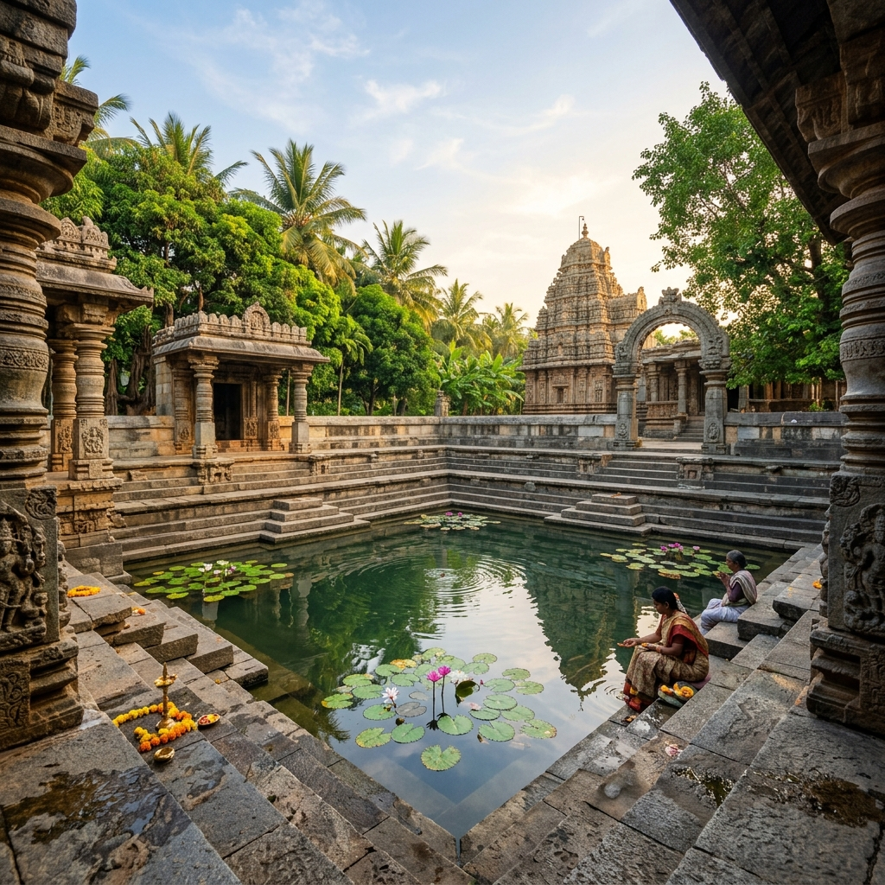
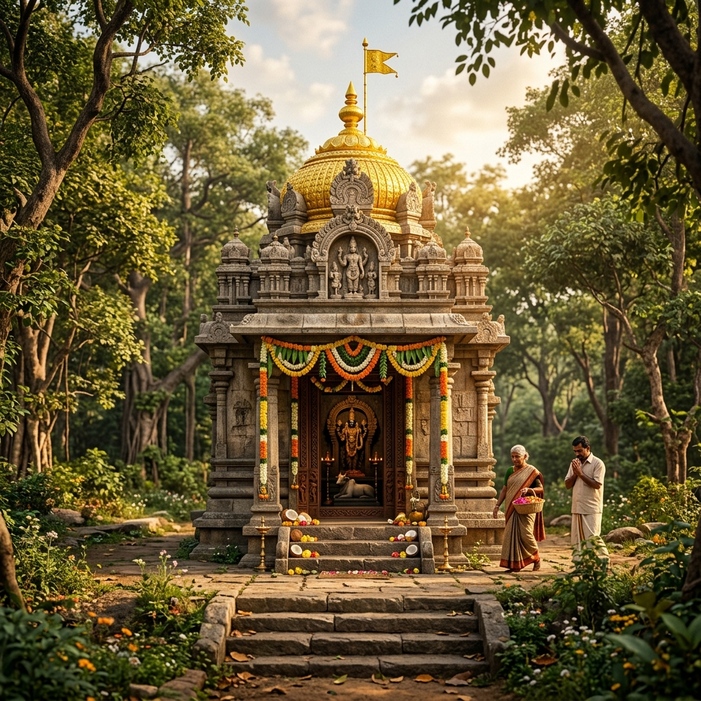
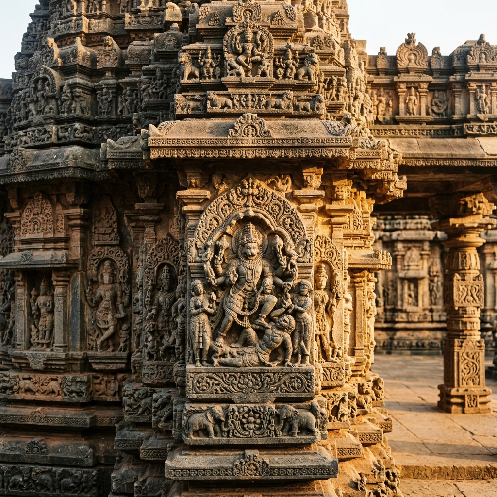

Sacred Gallery
Explore visual glimpses of the divine deity, ancient architecture, mystical forest canopies, and vibrant spiritual celebrations.
Explore visual glimpses of the divine deity, ancient architecture, mystical forest canopies, and vibrant spiritual celebrations.







